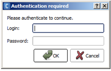

Once your NAO has been updated with a 2.x release, you can use the new Aldebaran Cloud to set an automatic system update.
For further details, see: Setting automatic system update.
To upgrade your NAO from version 1.x to 2.x, follow these steps:
| Step | Action |
|---|---|
NAO only: make sure your NAO is a V4 or a V5. For further details, see: NAO - Version. |
|
Check the battery level. Important: make sure the robot battery is fully charged: a power shortage during upgrading could leave the robot in a fatal state. Tips: if your battery has a limited autonomy, you should leave the charger plugged during the upgrade. However it could be wise to order a new battery. |
|
Make sure the sound level is high. A very sensitive step will be prompted by a sound, you need to hear it. |
| Step | Action |
|---|---|
Retrieve the NAO system image: opennao-atom-system-image-x.x.opn You can download the latest release from Community: https://community.aldebaran.com/ > Resources > Software |
|
| In Choregraphe, choose Connection > Advanced > Update NAO system. | |
| Select the system image to upload. | |
Click the Open button. The Authentication required window appears.  |
|
Type the Login and password of your robot.
|
|
Click the OK button. A progression bar is displayed. Warning Do not switch the robot off while the flashing process is running. Then a message let you know you can shut down and restart your robot. |
Troubleshooting
If something goes wrong during the system update process, and Choregraphe ends it prematurely, an error code is given in the pop-up.
For further details, see: NAO system update failure.
For specific cases, if you cannot use Choregraphe to upload the system, see: Advanced uploading methods.
To restart NAO after a system update:
| Step | Action |
|---|---|
Press and hold the robot Chest button for about 5 seconds until it gets blue. Ear LEDs shows the progression. For further details, see: Upgrading. |
|
Remain alert: a strong beep sound (echoing), indicates that one of the cards has its firmware updated. This could occur once or several times according to the release content (i.e. the number of firmwares to update). Warning: it may occur, on some robots, that the upgrade of the card controlling the Inertial sensor gets disturbed when the charger is plugged. In that case, the upgrade will be retried, up to 6 times, so you should hear the sound many times. Tips: in order to avoid this problem, simply unplug the charger once you have heard the first sound. |
|
| Optionally, in case of persistent disturbances Aldebaran robot may say: “To complete my upgrade, please make sure that I am well charged, unplug my charger and re-boot me”. | |
When the upgrade process is completed, Aldebaran robot may ask you to perform an auto-diagnostic by saying: “put me in an open space on the floor and touch my head or my bumper ...”. Warning During this auto-diagnostic, all safety reflexes are intentionally removed: do not shake nor push your Aldebaran robot and make sure it is in a safe place. If you don’t feel confident about the upgrade, for example if a repeated sound makes you think that the inertial sensor card may not be properly updated, do not proceed as asked and shutdown the robot: It gives you another chance to perform the upgrade properly. |
|
NAOFlasher option: do not forget to remove the USB stick from NAO‘s head and to close the Hatch behind the head of the robot. Factory reset option: if you have requested a Factory reset, then all settings have been reset, therefore you need to restore the WiFi connection settings. For further details, see: Setting NAO’s WiFi connection. |
To upload NAO system, you may also use NAOFlasher.
Note that this method, is more complex and requires a USB key and sometimes an Ethernet cable.
| If ... | Choose ... |
|---|---|
... your robot is booting normally, and you want to:
|
|
... your robot is not booting normally, ... you have lost the password of your robot and cannot connect to the NAO Web page, or ... you wish to downgrade the current release. |
|